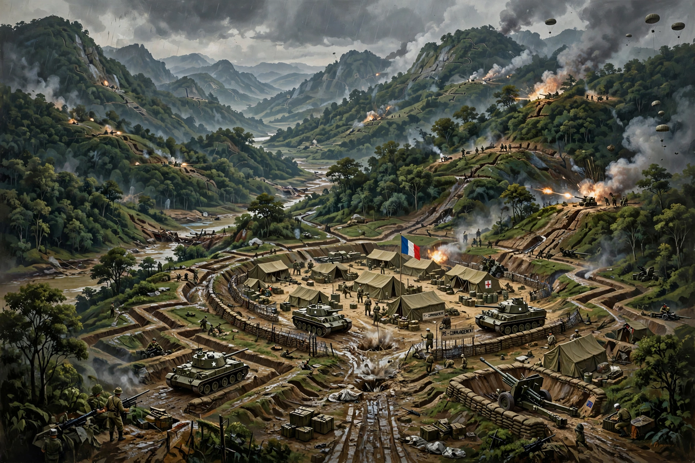

Điện Biên Phủ is a city in northwestern Vietnam, capital of Điện Biên Province, near the border with Laos. It is famous as the site of the decisive Battle of Dien Bien Phu (13 March – 7 May 1954), in which Viet Minh forces under Võ Nguyên Giáp defeated the French Union garrison, ending the First Indochina War.

| Dien Bien Phu | |
|---|---|
| Country | Vietnam |
| Province | Điện Biên |
| Area | ~64 km² |
| Population | ~80,000–100,000 |
France established a fortified camp in the valley in November 1953 (Operation Castor) to block Viet Minh supply lines into Laos, expecting its artillery and air supply to prevail. Giáp instead hauled artillery through jungle mountains, dug extensive trenches, and besieged the strongpoints — Beatrice, Gabrielle, Anne-Marie, Dominique, Huguette, Claudine, Eliane and Isabelle. After 57 days the garrison surrendered on 7 May 1954; roughly 11,000–12,000 prisoners were taken, many dying in captivity.
The defeat precipitated the fall of the Laniel government in Paris and the 1954 Geneva Accords, which partitioned Vietnam at the 17th parallel and ended French Indochina — setting the stage for the Vietnam War.
The modern city preserves battle sites including the A1 Hill, the French command bunker of Colonel de Castries, cemeteries and a victory museum, and hosts commemorations of the battle.